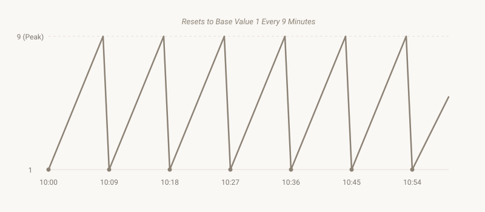

If you calculate the reduced number of your current moment, you will land on a single digit between 1 and 9. That number acts as the mathematical signature of your exact minute. But because time moves continuously forward, that signature is engaged in a constant, predictable dance.
When you map out exactly how that reduced signature shifts minute by minute across a full hour, the smallest-scale pattern of our day reveals itself. It is a steady, rhythmic pulse.
Anatomy of an Hour
Let's look at the first ten minutes of any generic hour—we will use 10:00 through 10:09 as a clear baseline. If we calculate the digital reduction of the minutes, the pattern climbs uniformly:
- 10:00 → Minute value: 0
- 10:01 → Minute value: 1
- 10:02 → Minute value: 2
- ... The sequence climbs steadily through 3, 4, 5, 6, 7, 8 ...
- 10:09 → Minute value: 9
Watch what happens precisely at the ten-minute mark. The clock reads 10:10. When we reduce the minutes, $1 + 0 = 1$. The value collapses immediately back down to its base. The climb begins anew.
This rigid reset happens exactly six times every hour:
- Minutes :00–:09 → Climb from 0 to 9
- Minutes :10–:19 → Climb from 1 to 1 (after reduction)
- Minutes :20–:29 → Climb from 2 to 2
- Minutes :30–:39 → Climb from 3 to 3
- Minutes :40–:49 → Climb from 4 to 4
- Minutes :50–:59 → Climb from 5 to 5

The six-fold pulse: a mechanical clock mapped out as a rhythmic waveform.When mapped visually, the result is a clean sawtooth wave. Six distinct peaks, six distinct resets. Every hour of every day behaves exactly this way. The hour value provides a flat, steady baseline, while the minutes provide a continuous internal heartbeat.
The Rhythmic Quality of Six
In historical systems of thought, the number six holds a distinct position as an organizer of form. It represents the space needed for physical balance—manifested as the six spatial directions or the traditional days of creative labor before rest. Viewed through a contemplative lens, six maps to the concept of harmony and equilibrium, structuralizing raw energy so it doesn't spill over.
Whether you look at this as an intrinsic design or an amusing quirk of how humans split time into base-60 tracking, the reality is immutable: our mechanical day possesses an underlying pulse.
Try calculating your current minute right now. Where are you standing on the slope of the wave? Are you climbing up a peak, or have you just passed through a sharp reset?
This hourly heartbeat is the most localized pattern in the architecture of time. But when we step back to view the full day, the individual waves compile into a massive, three-part movement.
The Next Step
Zooming out from the hour reveals that the day divides itself into three massive, predictable shifts: